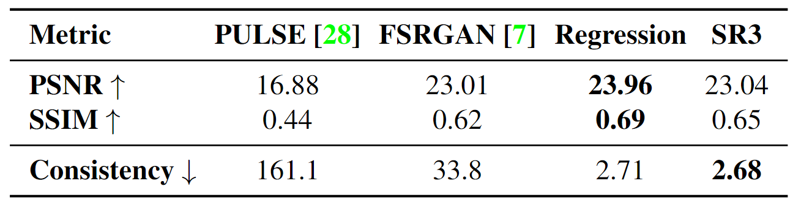
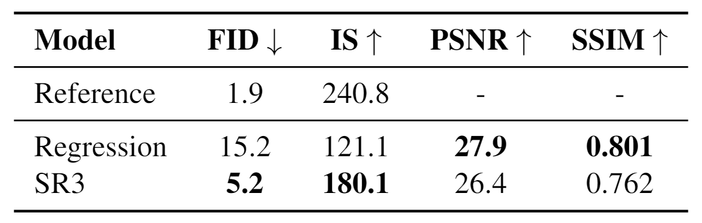
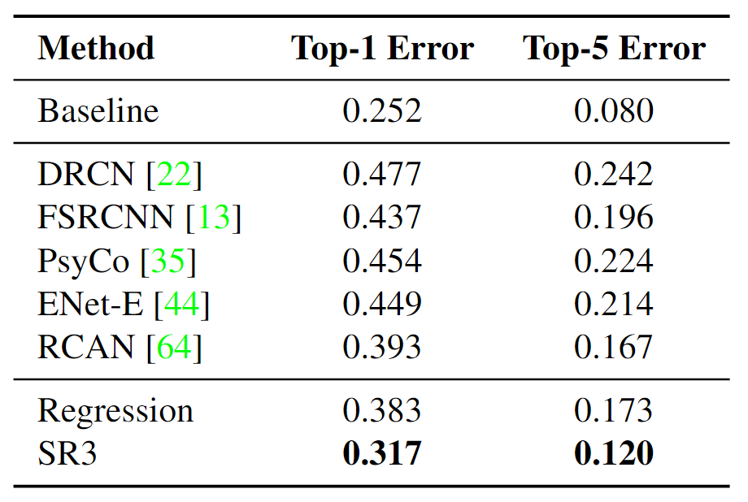

[Skim-read] Image Super-Resolution via Iterative Refinement

- This paper is published in TPAMI 2023.
Overview
Problem
- In the field of image super-resolution, existing approaches often suffer from various limitations; e.g., autoregressive models are prohibitively expensive for high-resolution image generation, Normalizing Flows (NFs) and variational autoencoders (VAEs) often yield sub-optimal sample quality, and GANs require carefully designed regularization and optimization tricks to tame optimization instability and model collapse.
Solution
- Present SR3, an approach to image super-resolution via repeated refinement based on DDPM.
Results
- The high-frequency information of the image can be well resored compared to other methods.
- Despite mediocre performance in SSIM and PSNR metrics, visualization and consistency are good.
Related Work
Diffusion Probabilistic Models
I’ve written a blog about diffusion probabilistic models (DPM). It has the derivation of the basic formulas of the DPM as well as a simple code implementation.
Method
Gaussian noise to the target image. The reverse inference process
$p$ (right to left) iteratively denoises the target image conditioned
on a source image x. (Image source: Saharia et al. 2023)
SR3 is a model obtained by improving on DDPM. Instead of randomly generating images, low resolution images are used as conditions to generate images. The main changes in SR3 are:
- The low resolution image is concatenated to the original input (x_t-1) after bicubic interpolation to get a 6-channel tensor as the new input to the DDPM.
We experimented with more sophisticated methods of conditioning, such as using FiLM (Perez et al. 2018), but we found that the simple concatenation yielded similar generation quality.
- Instead of sampling $\bar{\alpha}_t$ directly using timestep $t$ to compute the correlation variable and loss, a random value is sampled from the distribution $\bar{\alpha} \sim p(\bar{\alpha}) = U(\bar{\alpha}_{t-1}, \bar{\alpha}_{t})$. (Section 2.4 in Saharia et al. 2023)
- The model receives noise level $\bar{\alpha}_t$ directly instead of timestamp $t$. This allows flexibility in adjusting the noise level and the number of sampling steps during inferring.
Experrimental Study
New metric: Consistency
As a measure of the consistentcy of the superresolution outputs, we compute MSE between the downsampled outputs and the low resolution inputs.
New metric: Classification Accuracy
In the field of low-level vision, metrics often do not comprehensively represent the quality of images. Therefore the effectiveness of low-level models is often evaluated in terms of proxy tasks.
This paper mirror the evalution setup of Zhang et al. (2018) and apply 4$\times$ superresolution models to 56$\times$56 center crops from the validation set of ImageNet.
Quantitative Results
Compared to PULSE (Menon et al. 2020), FSRGAN (Chen et al. 2018), and Regressive models, the results in terms of PSNR and SSIM are relatively average. This is because traditional super-resolution models are typically trained based on PSNR, which SR3 is not. Therefore, it is normal for the metrics to be relatively low. However, the consistency metrics, on the other hand, perform very well.
Consistency measures MSE ($\times10^{−5}$) between the lowresolution
inputs and the down-sampled super-resolution outputs. (Table
source: Saharia et al. 2023 as a screenshot) 
baseline on natural image super-resolution using standard
metrics computed on the ImageNet validation set. (Table
source: Saharia et al. 2023 as a screenshot) 
Evaluation of Proxy Task
- Object recognition baseline: ResNet-50 (He et al. 2016).
image super-resolution on the first 1K images from the ImageNet
Validation set. (Table source: Saharia et al. 2023 as a screenshot) 
Human Evaluation (2AFC)
This paper use a 2-alternative forced-choice (2AFC) paradigm to measure how well humans can discriminate true images from those generated from a model.
photo-realistic samples yield a fool rate of 50%). Outputs of 4
models are compared against ground truth. (top) Subjects are
shown low-resolution inputs. (bottom) Inputs are not shown.
(Image source: Saharia et al. 2023)
photo-realistic samples yield a fool rate of 50%). SR3 and Regression
outputs are compared against ground truth. (top) Subjects are shown
low-resolution inputs. (bottom) Inputs are not shown. (Image source:
Saharia et al. 2023)
Visualization
super-resolution task. Reference image has not been included because
of privacy concerns. (Image source: Saharia et al. 2023)
images outside of the training set, along with enlarged patches to show finer details.
(Image source: Saharia et al. 2023)
Fig. 4 shows that the image obtained by SR3 has more details (high-frequency information of the image) compared to the regression model.
Summary
SR3 employs a completely novel approach to super-resolution, distinct from previous approaches based on GANs and CNNs. It primarily generates high-resolution images by denoising progressively from low resolution images conditioned on diffusion models. In the experimental section, the PSNR and SSIM metrics show relatively less impressive performance compared to other methods. However, it outperforms the Regression model in terms of FID and IS metrics, which would be more convincing if PULSE and FSRGAN also be evaluated. Personally, I find the consistency metric not very meaningful. Still, its remarkable performance in proxy task compared to the Regression model is worth attention (through there is still a lack of experimental comparisons with PULSE and FSRGAN). The approach of using diffusion models for image super-resolution is effective, and there is potential for further research in the future.
Reference
[1] Chitwan Saharia et al. “Image Super-Resolution via Iterative Refinement.” TPAMI 2023.
[2] Ethan Perez et al. “FiLM: Visual Reasoning with a General Conditioning Layer.” AAAI 2018.
[3] Yulun Zhang et al. “Image Super-Resolution Using Very Deep Residual Channel Attention Networks.” ECCV 2018.
[4] Sachit Menon et al. “PULSE: Self-Supervised Photo Upsampling via Latent Space Exploration of Generative Models.” CVPR 2020.
[5] Yu Chen et al. “FSRNet: End-to-End Learning Face Super-Resolution With Facial Priors.” CVPR 2018.
[6] Kaiming He et al. “Deep residual learning for image recognition.” CVPR 2016.